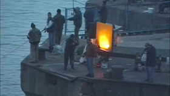

Your Silent Face (Fucking Finland Series)
Seamus Harahan
Irland / Großbritannien / Finnland 2015
6 Min – HD – engl. OV
K+S+SD+P+V: Seamus Harahan
Als Teil der Serie FUCKING FINLAND SERIES, in der Harahan die Gräben und Brücken des ehemaligen Eisernen Vorhangs erforscht, beschäftigt sich YOUR SILENT FACE mit den Rostocker Hafenarbeitern im Ruhestand. Eine baltische Fähre verlässt den Hafen in Richtung finnisches Hanko.
montag 12 okt 22.30 uhr werkstattkino
Seamus Harahan geb. 1968 in London, lebt und arbeitet in Belfast. 2001 machte er einen Master of Fine Arts an der Universität von Ulster in Belfast. Harahan benutzt seine Videokamera ohne Stativ um scheinbar amateurhafte Aufnahmen zu machen. Sein Hauptsujets sind die urbane Landschaft, zufällige Details und die flüchtige Natur.
Filme (Auswahl) Holylands 2004 – Samurai 2006 – Free as a bird 2006 – Turpin Hero 2007 – AwingBigCell 2008 (mit Miriam de Burca) – Cold Open 2013